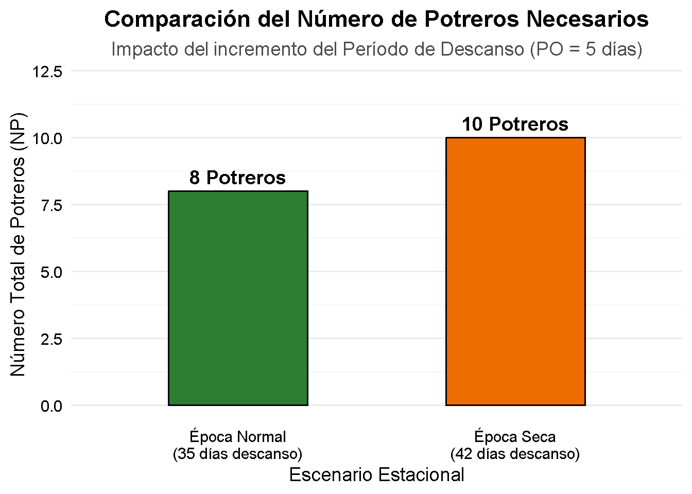
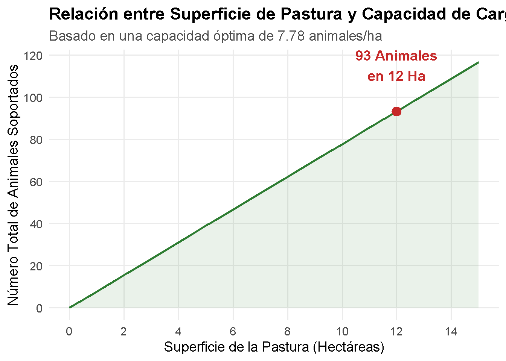
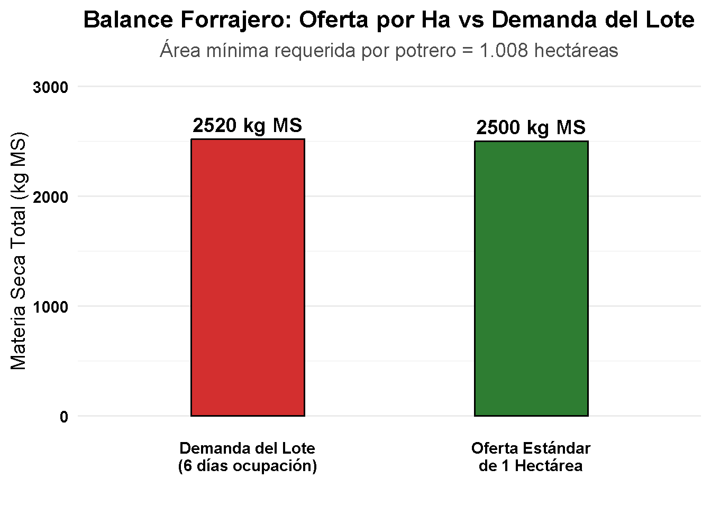
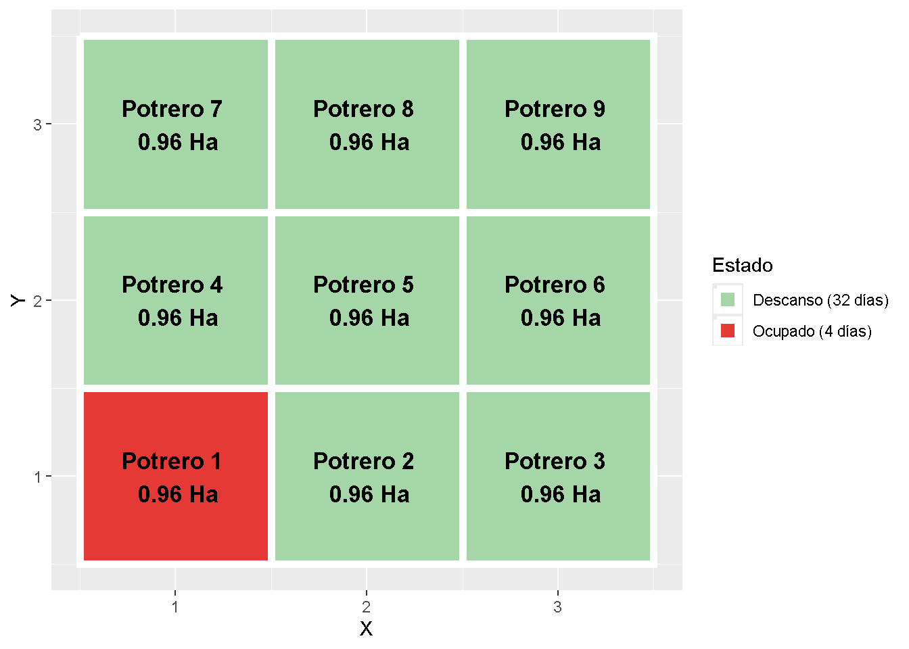
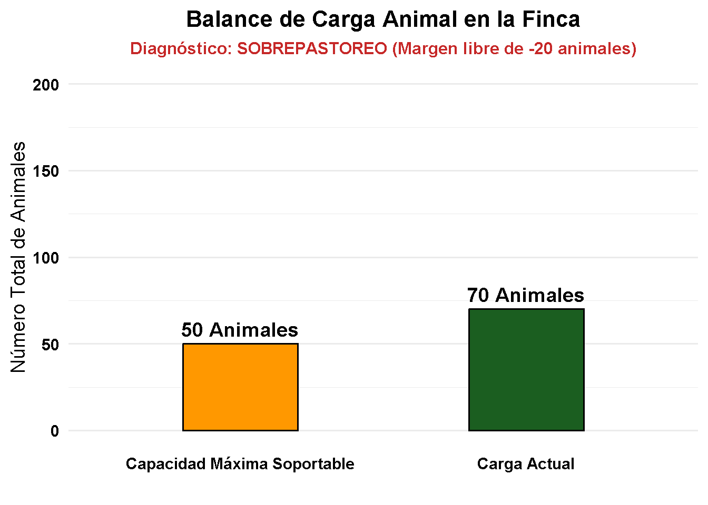
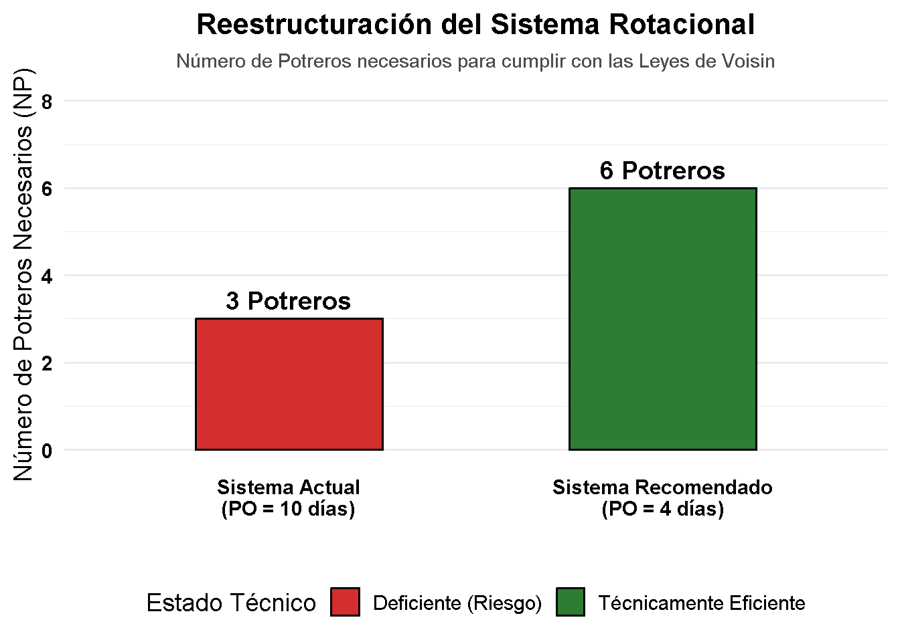

PROBLEMA 1. NÚMERO DE POTREROS (4 puntos) Una finca ganadera maneja pasto Brachiaria brizantha bajo pastoreo rotacional. Datos: • Período de ocupación = 5 días • Período de descanso = 35 días Se pide: a) Determinar el número de potreros necesarios. b) Si durante la época seca el período de descanso aumenta a 42 días, calcular el nuevo número de potreros. c) Explicar cuál de los dos sistemas favorecería una mejor recuperación del pasto.
# 1. DEFINICIÓN DE VARIABLES Y CÁLCULOS -----------------------------------# Escenario A: Época Lluviosa / NormalPO_a <-5# Período de ocupación (días)PD_a <-35# Período de descanso (días)NP_a <- (PD_a / PO_a) +1# Escenario B: Época SecaPO_b <-5# Período de ocupación (días)PD_b <-42# Período de descanso (días)# Se aplica ceiling() para redondear hacia arriba al entero más cercanoNP_b <-ceiling((PD_b / PO_b) +1) # 2. MOSTRAR FORMULAS Y EJERCICIOS EN CONSOLA -----------------------------cat("=========================================================================\n")
# Instalar ggplot2 si no está instalado, y cargar la libreríaif(!require(ggplot2)) install.packages("ggplot2")
Cargando paquete requerido: ggplot2
library(ggplot2)# Crear el data frame con los datos para graficardatos_potreros <-data.frame(Escenario =c("Época Normal\n(35 días descanso)", "Época Seca\n(42 días descanso)"),Potreros =c(NP_a, NP_b),Color =c("#2E7D32", "#EF6C00"))# Crear el gráfico con ggplot2grafico <-ggplot(datos_potreros, aes(x = Escenario, y = Potreros, fill = Escenario)) +geom_bar(stat ="identity", width =0.5, color ="black", show.legend =FALSE) +geom_text(aes(label =paste(Potreros, "Potreros")), vjust =-0.5, fontface ="bold", size =5) +scale_fill_manual(values = datos_potreros$Color) +labs(title ="Comparación del Número de Potreros Necesarios",subtitle ="Impacto del incremento del Período de Descanso (PO = 5 días)",x ="Escenario Estacional",y ="Número Total de Potreros (NP)" ) +theme_minimal(base_size =14) +theme(plot.title =element_text(face ="bold", hjust =0.5),plot.subtitle =element_text(hjust =0.5, color ="gray30"),axis.text =element_text(color ="black"),panel.grid.major.x =element_blank() ) +ylim(0, 12)# Desplegar el gráficoprint(grafico)

PROBLEMA 2. CAPACIDAD DE CARGA (4 puntos) Una hectárea de pasto estrella africana produce 15 000 kg de forraje verde por ciclo. Datos: • Producción de forraje verde = 15 000 kg/ha • Aprovechamiento = 70% • Peso promedio animal = 450 kg • Período de descanso = 30 días Se pide: a) Calcular el consumo diario de un animal. b) Determinar la capacidad de carga (animales/ha). c) Indicar cuántos animales podrían mantenerse en 12 ha de pastura.
# -------------------------------------------------------------------------# PROGRAMA: CÁLCULO DE CAPACIDAD DE CARGA Y CARGA TOTAL EN LA FINCA# -------------------------------------------------------------------------# 1. DEFINICIÓN DE VARIABLES Y CÁLCULOS -----------------------------------PFV <-15000# Producción de Forraje Verde (kg/ha)Aprovechamiento <-0.70# Porcentaje utilizable (70%)Peso_animal <-450# Peso promedio del animal (kg)PD <-30# Período de descanso (días)Hectareas <-12# Superficie total de la pradera (ha)# a) Consumo diario por animal (10% del peso vivo)Consumo_diario <- Peso_animal *0.10# b) Capacidad de carga (Número de Animales por hectárea)Forraje_disponible <- PFV * AprovechamientoConsumo_periodo <- Consumo_diario * PDNA_ha <- Forraje_disponible / Consumo_periodo# c) Total de animales en la superficie dadaTotal_animales_exacto <- NA_ha * HectareasTotal_animales_real <-floor(Total_animales_exacto) # Redondeo hacia abajo (conservador)# 2. MOSTRAR FORMULAS Y EJERCICIOS EN CONSOLA -----------------------------cat("=========================================================================\n")
# 3. GENERACIÓN DEL GRÁFICO (PROYECCIÓN DE ANIMALES POR HECTÁREA) ---------# Instalar ggplot2 si no está instaladoif(!require(ggplot2)) install.packages("ggplot2")library(ggplot2)# Crear un set de datos dinámico para ver cómo escala el número de animales según las haproyeccion_finca <-data.frame(Ha =0:15,Animales = (0:15) * NA_ha)# Gráfico de línea de capacidad biológica con punto objetivo en 12 hagrafico_carga <-ggplot(proyeccion_finca, aes(x = Ha, y = Animales)) +geom_line(color ="#2E7D32", size =1.2) +# Línea verde de capacidadgeom_area(fill ="#2E7D32", alpha =0.1) +# Zona segura de pastoreogeom_point(aes(x = Hectareas, y = Total_animales_exacto), color ="#C62828", size =4) +# Punto de las 12 hageom_text(aes(x = Hectareas, y = Total_animales_exacto, label =paste(Total_animales_real, "Animales\nen 12 Ha")), vjust =-1, hjust =0.5, fontface ="bold", color ="#C62828") +labs(title ="Relación entre Superficie de Pastura y Capacidad de Carga",subtitle =paste("Basado en una capacidad óptima de", round(NA_ha, 2), "animales/ha"),x ="Superficie de la Pastura (Hectáreas)",y ="Número Total de Animales Soportados" ) +scale_x_continuous(breaks =seq(0, 15, by =2)) +scale_y_continuous(breaks =seq(0, 120, by =20)) +theme_minimal(base_size =14) +theme(plot.title =element_text(face ="bold", color ="black"),plot.subtitle =element_text(color ="gray30"),panel.grid.minor =element_blank() )
Warning: Using `size` aesthetic for lines was deprecated in ggplot2 3.4.0.
ℹ Please use `linewidth` instead.
# Desplegar el gráfico en RStudioprint(grafico_carga)
Warning in geom_point(aes(x = Hectareas, y = Total_animales_exacto), color = "#C62828", : All aesthetics have length 1, but the data has 16 rows.
ℹ Please consider using `annotate()` or provide this layer with data containing
a single row.
Warning in geom_text(aes(x = Hectareas, y = Total_animales_exacto, label = paste(Total_animales_real, : All aesthetics have length 1, but the data has 16 rows.
ℹ Please consider using `annotate()` or provide this layer with data containing
a single row.

PROBLEMA 3. ÁREA DE POTREROS (4 puntos) Un productor dispone de: • 40 novillos • Peso promedio = 350 kg • Sistema rotacional • Período de ocupación = 6 días • Producción disponible = 2 500 kg MS/ha Se pide: a) Calcular el consumo diario por animal. b) Calcular el consumo diario total del lote. c) Determinar el requerimiento de forraje para el período de ocupación. d) Determinar el área necesaria de cada potrero.
# PROGRAMA: CÁLCULO DE ÁREA DE POTREROS (BASADO EN MATERIA SECA - MS)# 1. DEFINICIÓN DE VARIABLES Y CÁLCULOS Num_animales <-40# Número de novillosPeso_promedio <-350# Peso promedio por animal (kg)PO <-6# Período de ocupación (días)Prod_disponible <-2500# Producción disponible (kg MS/ha)# a) Consumo diario por animal (3% del Peso Vivo en Materia Seca)Consumo_diario_MS <- Peso_promedio *0.03# b) Consumo diario total del loteConsumo_total_lote_dia <- Num_animales * Consumo_diario_MS# c) Requerimiento de forraje para todo el período de ocupaciónRequerimiento_periodo <- Consumo_total_lote_dia * PO# d) Área necesaria de cada potrero (en hectáreas)Area_potrero <- Requerimiento_periodo / Prod_disponible# 2. MOSTRAR FORMULAS Y EJERCICIOS EN CONSOLA -----------------------------cat("=========================================================================\n")
# 3. GENERACIÓN DEL GRÁFICO (PRESUPUESTO FORRAJERO VS OFERTA) ------------# Instalar ggplot2 si no está instaladoif(!require(ggplot2)) install.packages("ggplot2")library(ggplot2)# Crear set de datos para comparar la Oferta Estándar (1 ha) vs Demanda Realdatos_balance <-data.frame(Concepto =c("Oferta Estándar\nde 1 Hectárea", "Demanda del Lote\n(6 días ocupación)"),Materia_Seca =c(Prod_disponible, Requerimiento_periodo),Tipo =c("Oferta", "Demanda"))# Crear el gráficografico_balance <-ggplot(datos_balance, aes(x = Concepto, y = Materia_Seca, fill = Tipo)) +geom_bar(stat ="identity", width =0.4, color ="black", show.legend =FALSE) +geom_text(aes(label =paste(Materia_Seca, "kg MS")), vjust =-0.5, fontface ="bold", size =5) +scale_fill_manual(values =c("Oferta"="#2E7D32", "Demanda"="#D32F2F")) +# Verde vs Rojolabs(title ="Balance Forrajero: Oferta por Ha vs Demanda del Lote",subtitle =paste("Área mínima requerida por potrero =", round(Area_potrero, 3), "hectáreas"),x ="",y ="Materia Seca Total (kg MS)" ) +theme_minimal(base_size =14) +theme(plot.title =element_text(face ="bold", hjust =0.5),plot.subtitle =element_text(hjust =0.5, color ="gray30"),axis.text =element_text(color ="black", face ="bold"),panel.grid.major.x =element_blank() ) +ylim(0, 3000)# Desplegar el gráfico en RStudioprint(grafico_balance)

PROBLEMA 4. DISEÑO COMPLETO DEL SISTEMA (4 puntos) Una explotación ganadera planea implementar un sistema rotacional utilizando pasto Mombaza. Datos: • 60 animales • Peso promedio = 400 kg • Producción de forraje = 3 000 kg MS/ha • Período de ocupación = 4 días • Período de descanso = 32 días Se pide: a) Consumo diario por animal. b) Consumo diario del lote. c) Requerimiento total durante el período de ocupación. d) Área de cada potrero. e) Número de potreros. f) Área total requerida para el sistema.
# PROGRAMA: DISEÑO COMPLETO DEL SISTEMA DE PASTOREO ROTACIONAL (VOISIN)# 1. DEFINICIÓN DE VARIABLES INICIALES Num_animales <-60# Número de animales (novillos)Peso_promedio <-400# Peso promedio por animal (kg)Prod_disponible <-3000# Producción de forraje disponible (kg MS/ha)PO <-4# Período de ocupación (días)PD <-32# Período de descanso (días)# 2. CÁLCULOS DEL SISTEMA DE PASTOREO -------------------------------------# a) Consumo diario por animal (3% del Peso Vivo en Materia Seca - MS)Consumo_diario_MS <- Peso_promedio *0.03# b) Consumo diario total del loteConsumo_lote_dia <- Num_animales * Consumo_diario_MS# c) Requerimiento total durante el período de ocupaciónRequerimiento_periodo <- Consumo_lote_dia * PO# d) Área de cada potrero (en hectáreas)Area_potrero <- Requerimiento_periodo / Prod_disponible# e) Número de potreros necesariosNP <- (PD / PO) +1# f) Área total requerida para el sistema de rotación completoArea_total <- NP * Area_potrero# 3. MOSTRAR FORMULAS Y DESARROLLO EN CONSOLA ----------------------------cat("=========================================================================\n")
# 4. GENERACIÓN DE LA VISUALIZACIÓN GRÁFICA DEL SISTEMA -------------------# Instalar y cargar ggplot2 si es necesarioif(!require(ggplot2)) install.packages("ggplot2")library(ggplot2)# Crear un set de datos representando la distribución del terreno (Matriz 3x3 para 9 potreros)grid_potreros <-expand.grid(X =1:3, Y =1:3)grid_potreros$ID <-1:9# Definimos que el Potrero 1 está ocupado y el resto en descansogrid_potreros$Estado <-ifelse(grid_potreros$ID ==1, paste0("Ocupado (", PO, " días)"), paste0("Descanso (", PD, " días)"))# Generar el gráfico de distribución espacialgrafico_sistema <-ggplot(grid_potreros, aes(x = X, y = Y, fill = Estado)) +geom_tile(color ="white", size =2, show.legend =TRUE) +# Etiquetas de texto dentro de cada celda/potrerogeom_text(aes(label =paste("Potrero", ID, "\n", round(Area_potrero, 2), "Ha")), color ="black", fontface ="bold", size =4.5) +# Paleta de colores biológicosscale_fill_manual(values =c("Ocupado (4 días)"="#E53935", # Rojo vivo para ocupación/pastoreo activo"Descanso (32 días)"="#A5D6A7")) # Verde suave para recuperación foliarlabs(title ="Diseño Espacial y Dinámica del Sistema de Pastoreo",subtitle =paste("Sistema completo de", round(Area_total, 2), "Ha | 9 potreros de", round(Area_potrero, 2), "Ha c/u"),caption ="Nota: El ganado rota consecutivamente de potrero en potrero cumpliendo con las Leyes de Voisin.",x ="Distribución Análoga Horizontal",y ="Distribución Análoga Vertical" ) +theme_minimal(base_size =14) +theme(plot.title =element_text(face ="bold", size =16, hjust =0.5),plot.subtitle =element_text(size =12, hjust =0.5, color ="gray30"),plot.caption =element_text(face ="italic", color ="gray40", size =10),legend.position ="bottom",legend.title =element_text(face ="bold"),axis.text =element_blank(), # Ocultar coordenadas para emular un mapa realaxis.ticks =element_blank(),panel.grid =element_blank(),axis.title =element_blank() )
NULL
# Desplegar el mapa en RStudioprint(grafico_sistema)

PROBLEMA 5. ANÁLISIS TÉCNICO Y TOMA DE DECISIONES (4 puntos) Lea cuidadosamente los siguientes casos y responda. Caso A Un productor mantiene 70 bovinos en una pastura de 20 ha. La capacidad de carga calculada para dicha pastura es de 2.5 animales/ha. Preguntas 1. ¿Cuál es la capacidad máxima de animales que soporta la finca? 2. ¿Existe sobrepastoreo o subpastoreo? 3. ¿Qué consecuencias tendría esta situación?
Caso B Un sistema rotacional presenta: • Período de ocupación = 10 días • Período de descanso = 20 días Preguntas 1. ¿El período de ocupación es adecuado según las recomendaciones técnicas? 2. ¿Qué problemas podrían presentarse en la persistencia de la pastura? 3. ¿Qué cambios recomendaría?
Caso A
# -------------------------------------------------------------------------# PROGRAMA: CASO A - ANÁLISIS DE CAPACIDAD DE CARGA Y DIAGNÓSTICO# -------------------------------------------------------------------------# 1. DEFINICIÓN DE VARIABLES INICIALES ------------------------------------Bovinos_actuales <-70# Número de animales actuales en la fincaArea_finca <-20# Superficie total de la pastura (ha)Capacidad_carga_calc <-2.5# Capacidad de carga óptima calculada (animales/ha)# 2. CÁLCULO DE CAPACIDAD MÁXIMA Y BALANCE --------------------------------# Capacidad máxima que soporta la fincaCapacidad_maxima <- Area_finca * Capacidad_carga_calc# Determinación de la condición de pastoreoDiferencia <- Capacidad_maxima - Bovinos_actualesDiagnostico <-if (Bovinos_actuales < Capacidad_maxima) {"SUBPASTOREO"} elseif (Bovinos_actuales > Capacidad_maxima) {"SOBREPASTOREO"} else {"CARGA ÓPTIMA (EQUILIBRIO)"}# 3. IMPRESIÓN DE FÓRMULAS, DESARROLLO Y ANÁLISIS TÉCNICO -----------------cat("=========================================================================\n")
# 4. GENERACIÓN DE LA GRÁFICA COMPARATIVA DE CARGA -----------------------if(!require(ggplot2)) install.packages("ggplot2")library(ggplot2)# Crear dataset para la comparacióndatos_carga <-data.frame(Categoria =c("Carga Actual", "Capacidad Máxima Soportable"),Animales =c(Bovinos_actuales, Capacidad_maxima),Color =c("#FF9800", "#1B5E20") # Naranja para actual, Verde para límite)# Generar gráfico de barras de balancegrafico_caso_a <-ggplot(datos_carga, aes(x = Categoria, y = Animales, fill = Categoria)) +geom_bar(stat ="identity", width =0.4, color ="black", show.legend =FALSE) +geom_text(aes(label =paste(Animales, "Animales")), vjust =-0.5, fontface ="bold", size =5) +scale_fill_manual(values = datos_carga$Color) +labs(title ="Balance de Carga Animal en la Finca",subtitle =paste("Diagnóstico:", Diagnostico, "(Margen libre de", Diferencia, "animales)"),x ="",y ="Número Total de Animales" ) +theme_minimal(base_size =14) +theme(plot.title =element_text(face ="bold", size =16, hjust =0.5),plot.subtitle =element_text(size =12, hjust =0.5, color ="#C62828", face ="bold"),axis.text =element_text(color ="black", face ="bold"),panel.grid.major.x =element_blank() ) +ylim(0, 200)# Imprimir gráficoprint(grafico_caso_a)

Caso B
# -------------------------------------------------------------------------# PROGRAMA: CASO B - EVALUACIÓN DEL SISTEMA ROTACIONAL Y RECOMENDACIONES# -------------------------------------------------------------------------# 1. DEFINICIÓN DE VARIABLES INICIALES ------------------------------------PO_actual <-10# Período de ocupación actual (días)PD_actual <-20# Período de descanso actual (días)# Recomendación técnica propuestaPO_propuesto <-4# Período de ocupación recomendado (días)PD_propuesto <-20# Período de descanso recomendado (días)# 2. CÁLCULO DE NÚMERO DE POTREROS (ACTUAL VS RECOMENDADO) ----------------# Sistema ActualNP_actual <- (PD_actual / PO_actual) +1# Sistema PropuestoNP_propuesto <- (PD_propuesto / PO_propuesto) +1# 3. IMPRESIÓN DE FÓRMULAS, DESARROLLO Y ANÁLISIS TÉCNICO -----------------cat("=========================================================================\n")
# 4. GENERACIÓN DE LA GRÁFICA COMPARATIVA DE SISTEMAS --------------------if(!require(ggplot2)) install.packages("ggplot2")library(ggplot2)# Crear dataset comparativodatos_sistema <-data.frame(Sistema =c("Sistema Actual\n(PO = 10 días)", "Sistema Recomendado\n(PO = 4 días)"),Potreros =c(NP_actual, NP_propuesto),Tipo =c("Deficiente (Riesgo)", "Técnicamente Eficiente"))# Generar gráfico de barrasgrafico_caso_b <-ggplot(datos_sistema, aes(x = Sistema, y = Potreros, fill = Tipo)) +geom_bar(stat ="identity", width =0.5, color ="black") +geom_text(aes(label =paste(Potreros, "Potreros")), vjust =-0.5, fontface ="bold", size =5) +scale_fill_manual(values =c("Deficiente (Riesgo)"="#D32F2F", "Técnicamente Eficiente"="#2E7D32")) +labs(title ="Reestructuración del Sistema Rotacional",subtitle ="Número de Potreros necesarios para cumplir con las Leyes de Voisin",x ="",y ="Número de Potreros Necesarios (NP)",fill ="Estado Técnico" ) +theme_minimal(base_size =14) +theme(plot.title =element_text(face ="bold", size =16, hjust =0.5),plot.subtitle =element_text(size =11, hjust =0.5, color ="gray30"),legend.position ="bottom",axis.text =element_text(color ="black", face ="bold"),panel.grid.major.x =element_blank() ) +ylim(0, 8)# Imprimir gráficoprint(grafico_caso_b)

PREGUNTA INTEGRADORA (BONO: 2 puntos) Un productor cuenta con: • 50 vacunos • Peso promedio = 500 kg • Producción de forraje = 18 000 kg FV/ha • Descanso = 36 días • Ocupación = 4 días Determine: 1. Capacidad de carga (animales/ha). 2. Número de potreros. 3. Área total requerida para sostener el sistema. Interprete los resultados y emita una recomendación técnica para mejorar la eficiencia del sistema de pastoreo.
# PROGRAMA: RESOLUCIÓN - PREGUNTA INTEGRADORA (BONO)# 1. DEFINICIÓN DE VARIABLES DE ENTRADA Vacunos <-50# Número de vacunos en el lotePeso_promedio <-500# Peso promedio de cada animal (kg)PFV <-18000# Producción de Forraje Verde (kg FV/ha)PD <-36# Período de descanso (días)PO <-4# Período de ocupación (días)Aprovechamiento <-0.70# Porcentaje utilizable (70%)# 2. CÁLCULOS TÉCNICOS INTEGRALES ----------------------------------------# a) Consumo diario de un animal (10% de su peso vivo en forraje verde)Consumo_diario_FV <- Peso_promedio *0.10# b) Capacidad de carga (animales/ha)Forraje_utilizable_ha <- PFV * AprovechamientoConsumo_por_ciclo_ha <- Consumo_diario_FV * PDCapacidad_carga <- Forraje_utilizable_ha / Consumo_por_ciclo_ha# c) Número de potreros necesariosNP <- (PD / PO) +1# d) Área de cada potreroConsumo_diario_lote <- Vacunos * Consumo_diario_FVRequerimiento_periodo <- Consumo_diario_lote * POArea_potrero <- Requerimiento_periodo / Forraje_utilizable_ha# e) Área total requerida para sostener el sistemaArea_total_sistema <- NP * Area_potrero# 3. MOSTRAR FORMULAS Y DESARROLLO PASO A PASO EN LA CONSOLA -------------cat("=========================================================================\n")
# 4. GENERACIÓN DE LA PLANIFICACIÓN DE ROTACIÓN (MAPA 2x5) ----------------# Instalar y cargar ggplot2 si es necesarioif(!require(ggplot2)) install.packages("ggplot2")library(ggplot2)# Crear un set de datos representando un mapa del terreno (Matriz 2 filas x 5 columnas = 10 potreros)grid_sistema <-expand.grid(Columna =1:5, Fila =1:2)grid_sistema$ID <-1:10# Clasificación de estado: Potrero 1 en uso activo, el resto en recuperación biológicagrid_sistema$Estado <-ifelse(grid_sistema$ID ==1, paste0("En Ocupación (", PO, " días)"), paste0("En Descanso (", PD, " días)"))# Generar el mapa del sistema rotacional de 10 potrerosgrafico_bono <-ggplot(grid_sistema, aes(x = Columna, y = Fila, fill = Estado)) +geom_tile(color ="white", size =2, show.legend =TRUE) +# Etiquetas de texto con la información de cada potrerogeom_text(aes(label =paste("Potrero", ID, "\n", round(Area_potrero, 3), "Ha")), color ="black", fontface ="bold", size =4) +# Paleta de colores biológicosscale_fill_manual(values =c("En Ocupación (4 días)"="#E53935", # Rojo de pastoreo activo"En Descanso (36 días)"="#A5D6A7")) # Verde para descanso biológicolabs(title ="Diseño de la Finca: Sistema Rotacional Voisin de 10 Potreros",subtitle =paste("Área Total Requerida:", round(Area_total_sistema, 2), "Ha | Lote de", Vacunos, "Vacunos de", Peso_promedio, "kg"),caption ="Nota: El ganado rota secuencialmente, respetando las leyes de reposo y preservación del suelo.",x ="",y ="" ) +theme_minimal(base_size =14) +theme(plot.title =element_text(face ="bold", size =15, hjust =0.5),plot.subtitle =element_text(size =11, hjust =0.5, color ="gray30"),plot.caption =element_text(face ="italic", color ="gray40", size =9),legend.position ="bottom",legend.title =element_text(face ="bold"),axis.text =element_blank(), # Omitir coordenadas para simular un layout plano realaxis.ticks =element_blank(),panel.grid =element_blank() )